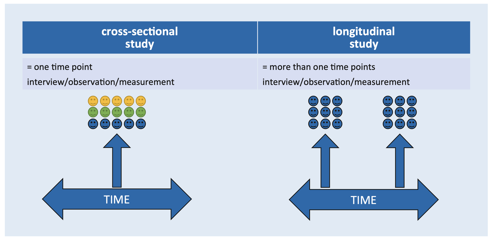
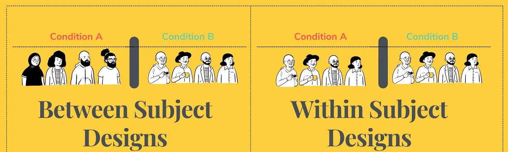

15:00
Research
Methods
Dr. Ajay Kumar Koli, PhD | SARA Institute of Data Science, India
The research process
Statistics
Definition: A numerical summary of a sample.
Scope: Describes the characteristics of a subset (sample).
Purpose: Used to estimate or infer the parameter.
Parameters
Definition: A numerical summary of a population.
Scope: Describes the characteristics of the entire group (population).
Purpose: Represents the true value for the population.
🤓 Tellme Moore: Average Test Scores of 500 Students
Key Differences
Parameter is about the population (e.g., the average score of all 500 students).
Statistic is about a sample (e.g., the average score of 50 students).
Goal: A statistic is used to estimate the parameter.
Sampling Variation
“These statistics vary from one sample to the next.”
Sampling Error
“These statistics sometimes differ from the population parameter.”
👨🏽💻 Practice Statistics vs. Parameters
Imagine we have a population of students’ heights, and we take a sample from this population to calculate statistics and compare them to the parameters.
Statistical Learning
“Statistical Learning refers to a vast set of tools for understanding data.”
Statistics
Descriptive Statistics
Inferential Statistics
Descriptive Statistics
Summarizes and organizes data to describe its main features.
Limited to the observed data.
Inferential Statistics
Makes predictions or inferences about a population from a sample.
Goes beyond the observed data to infer population characteristics.
👨🏽💻 Practice Descriptive vs. Inferential Statistics
We will practice both descriptive and inferential statistics using a dataset of students’ test scores.
Research Methods
Research Methods
We can test a hypothesis in one of two ways:
Correlational Method
Experimental Method
Correlational Method
To identify relationship between variables.
Experimental Method
To determine causal relationships between variables.
🤓 Tellme Moore: Exercise and Academic Performance:
Purpose: To identify if a relationship exists between two variables but without establishing causation.
You collect data on two variables:
Exercise: The number of hours students exercise per week.
Academic Performance: Students’ GPA (Grade Point Average).
You analyze the data to see if there’s a correlation (e.g., higher exercise hours are associated with higher GPAs).
Outcome: “Exercise is positively correlated with GPA.”
Purpose: To determine causation by manipulating one variable and controlling others.
You design an experiment where you divide students into two groups:
Experimental Group: Students are asked to exercise 3 times a week for 1 hour.
Control Group: Students are not required to change their exercise habits.
Measure their GPAs over a semester.
Outcome: “Exercise improves GPA.”
Correlational Methods
Cross-sectional Study
“take a snapshot of many variables at a single point in time”
Longitudinal Study
“measure variable repeatedly at different time points”

Experimental Methods
“Comparing two conditions in a controlled way is at the heart of it.”
Two Ways to Manipulate
Between Subjects
“manipulate the independent variable using different entities”
Within Subjects
“manipulate the independent variable using the same entities”
Two Ways to Manipulate

Two Types of Variation
Systematic Variation
“differences created by a specific experimental manipulation”
Unsystematic Variation
“differences created by unmeasured or unknown factors”
Piecing it all Together
“research is complicated: there are always trade-offs and compromises”
Point Estimate
Using a single value, or point, to estimate the effect in the population.
Interval Estimate
A range of values between which we think the populations value is likely to fall.
👨🏽💻 Practice Point Estimate vs. Interval Estimate
Let’s estimate the average height of a population using a sample. We’ll calculate both a point estimate and a confidence interval (interval estimate) for the mean.
🤯 Your Turn
Write short notes about these key terms and arrange them in the order they should be done:
Theory
Hypothesis
Prediction
Variables
Generalization
Sample
Parmeters
Population
Representative Sample
Sampling Error
References
Deichsel, Adrian, Lukas Münch, and Brenda Laky. 2024. “Study Designs, Levels of Evidence, and Scientific biasStudiendesign, Evidenzlevel Und Wissenschaftlicher Bias.” Arthroskopie 37 (April). https://doi.org/10.1007/s00142-024-00681-y.
James, Gareth, Daniela Witten, Trevor Hastie, and Robert Tibshirani. 2017. An Introduction to Statistical Learning: With Applications in R. 1st ed. 2013, Corr. 7th printing 2017 edition. New York: Springer.